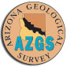
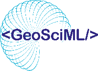
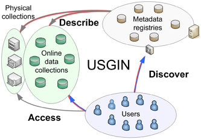
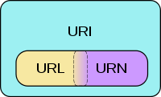
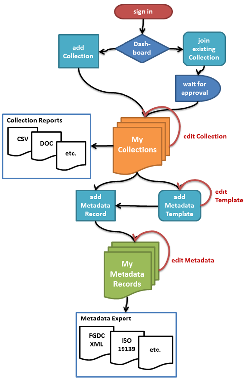

Specifications and Standards |
USGIN_ISO_Metadata_1.0.0.pdf
[PDF] |
USGIN ISO Metadata Profile v1.0.0
USGIN profile for ISO 19115/19139 metadata, version 1.0.0. |
1.6 MB |
USGIN_ISO_Metadata_1.1.0.pdf
[PDF] |
USGIN ISO Metadata Profile v1.1.0
USGIN profile for ISO 19115/19139 metadata, version 1.1.0. |
1.5 MB |
USGIN_ISO_DataSetMetadata_0.9.1.pdf
[PDF] |
USGIN ISO DataSet Metadata v0.9.1
USGIN dataset metadata profile based on ISO 19115, version 0.9.1. |
970 KB |
USGIN_ISO_Metadata_1.1.3.pdf
[PDF] |
USGIN ISO Metadata Profile v1.1.3
USGIN profile for ISO 19115/19139 metadata, version 1.1.3. |
1.6 MB |
USGIN_ISO_Metadata_1.1.4.pdf
[PDF] |
USGIN ISO Metadata Profile v1.1.4
USGIN profile for ISO 19115/19139 metadata, version 1.1.4. |
1.8 MB |
USGIN_MetadataRecommendationsGeoscienceResources_v1.03.pdf
[PDF] |
Metadata Recommendations for Geoscience Resources v1.03
Best practices and recommendations for metadata describing geoscience information resources. |
561 KB |
USGIN_URI_Scheme_1.0.1.pdf
[PDF] |
USGIN URI Scheme v1.0.1
USGIN policies for URI construction, version 1.0.1. |
316 KB |
USGIN_URI_Scheme_1.0.3.pdf
[PDF] |
USGIN URI Scheme v1.0.3
USGIN policies for URI construction, version 1.0.3. |
1.3 MB |
GeoSciML-PortrayalCookbook.pdf
[PDF] |
GeoSciML Portrayal Cookbook
Cookbook for implementing GeoSciML Portrayal view (simple features for web map services). |
1.1 MB |
ResourceTypes.pdf
[PDF] |
Resource Types
Document describing resource types used in USGIN metadata and catalog systems. |
18 KB |
The use of controlled vocabularies.pdf
[PDF] |
The Use of Controlled Vocabularies
Guidelines for using controlled vocabularies in geoscience information systems. |
1.4 MB |
Use_SKOS_encodingVocabularies.pdf
[PDF] |
Use of SKOS for Encoding Vocabularies
Guide to using SKOS (Simple Knowledge Organization System) for encoding controlled vocabularies. |
395 KB |
OGCOpenSearchExtensionsSummary.pdf
[PDF] |
OGC OpenSearch Extensions Summary
Summary of OGC OpenSearch geo and time extensions for catalog search. |
225 KB |
ServiceNamingConventions_cmc_0.docx
[DOCX] |
Service Naming Conventions
Naming conventions for NGDS/USGIN web services (WFS, WMS, CSW endpoints). |
18 KB |
MetadataEditorFunctionalSpecificationScenario.docx
[DOCX] |
Metadata Editor Functional Specification
Functional specification and use-case scenarios for the USGIN metadata editor. |
35 KB |
simple_metadata_recommendations_for_geoscience_resources_v1.03.docx
[DOCX] |
Simple Metadata Recommendations for Geoscience Resources v1.03 (DOCX)
Word document source for the metadata recommendations (editable version of the PDF). |
6.2 MB |
GenericCompleteMetadataConceptualModel.zip
[ZIP] |
Generic Complete Metadata Conceptual Model
ZIP archive containing the USGIN generic metadata conceptual model diagrams and documentation. |
2.2 MB |
Web servicesNGDS_20091103.zip
[ZIP] |
NGDS Web Services Package (2009-11-03)
Package of NGDS web service documentation and configuration from November 2009. |
232 KB |
JSON_metadataImplementation_0.txt
[TXT] |
JSON Metadata Implementation Notes
Notes on implementing USGIN metadata in JSON format. |
23 KB |
Tutorials and Technical Documents |
USGIN_Metadata_Wizard_Tutorial.pdf
[PDF] |
USGIN Metadata Wizard Tutorial
Step-by-step tutorial for using the USGIN Metadata Wizard to create ISO 19139 metadata records. |
943 KB |
GeoNetworkEclipseSetup.pdf
[PDF] |
GeoNetwork Eclipse Setup
Instructions for setting up GeoNetwork open source in Eclipse IDE for development. |
91 KB |
USGIN_ISO_CI_OnlineResource.pdf
[PDF] |
USGIN ISO CI_OnlineResource
Guide to implementing CI_OnlineResource elements in USGIN ISO metadata for linking to online resources. |
332 KB |
MetadataUSGIN2.pdf
[PDF] |
Metadata in USGIN (v2)
Overview of metadata practices and architecture in USGIN. |
12.2 MB |
Schema Validation.pdf
[PDF] |
Schema Validation
Guide to validating data against NGDS content model schemas. |
1.2 MB |
Help.pdf
[PDF] |
NGDS Help Document
Help documentation for NGDS (National Geothermal Data System) users. |
454 KB |
AZGS_to_NGGDPP_ETL_Bloomington_2009_July_v2.pdf
[PDF] |
AZGS to NGGDPP ETL (2009)
Extract-Transform-Load process documentation for migrating Arizona Geological Survey data to NGGDPP. |
820 KB |
wms_getcapabilities_url.txt
[TXT] |
WMS GetCapabilities URL List
List of WMS service GetCapabilities URLs used for ETL harvesting. |
2.6 KB |
Conference Posters and Presentations |
GSANational2011Poster.pdf
[PDF] |
GSA National 2011 Poster
Geological Society of America 2011 national meeting poster about USGIN. |
12.8 MB |
GeoSciML_AGU2011_v3release1.pdf
[PDF] |
GeoSciML AGU 2011 Presentation
American Geophysical Union 2011 presentation on GeoSciML version 3. |
2.9 MB |
MachineActionableLinksSummary.pdf
[PDF] |
Machine Actionable Links Summary
Summary of machine-actionable link patterns for geoscience data services. |
718 KB |
MachineActionableLinksSummary20111212.pdf
[PDF] |
Machine Actionable Links Summary (2011-12-12)
Updated summary of machine-actionable link patterns, December 2011 version. |
723 KB |
USGINmetadataPoster.pdf
[PDF] |
USGIN Metadata Poster
Conference poster summarizing USGIN metadata architecture and practices. |
3.7 MB |
NGDSPoster.pdf
[PDF] |
NGDS Poster
Conference poster about the National Geothermal Data System. |
15.1 MB |
metadata-esriuc-071211.pdf
[PDF] |
Metadata at ESRI UC 2011
Presentation on metadata practices presented at ESRI User Conference, July 2011. |
1.9 MB |
usgin-esriuc-071211.pdf
[PDF] |
USGIN at ESRI UC 2011
Presentation on USGIN presented at ESRI User Conference, July 2011. |
2.8 MB |
grunberg_USGIN_CSW_Poster_optimized.pdf
[PDF] |
USGIN CSW Poster (Grunberg)
Poster on USGIN Catalog Service for the Web implementation. |
45.3 MB |
richard_USGIN_HowDoWeDoIT_optimized.pdf
[PDF] |
USGIN: How Do We Do IT (Richard)
Poster explaining USGIN technical infrastructure and implementation approach. |
43.9 MB |
Richard_2012EGU_usgin.pptx
[PPTX] |
USGIN at EGU 2012 (Richard)
European Geosciences Union 2012 presentation about USGIN. |
2.7 MB |
Richard_CSIG_2011_usgin.pptx
[PPTX] |
USGIN at CSIG 2011 (Richard)
Council of State Geologists Information Geologists 2011 presentation about USGIN. |
12.2 MB |
Geoscience informationServices_USGS2010_0415.ppt
[PPT] |
Geoscience Information Services (USGS 2010)
USGS presentation on geoscience information services, April 2010. |
5.8 MB |
rjc_wrp.ppt
[PPT] |
USGIN Web Resource Profiles (RJC)
Presentation on USGIN web resource profiles. |
2.2 MB |
Software and Tools |
CSWClient_v3.zip
[ZIP] |
CSW Client v3
Catalog Service for the Web (CSW) desktop client application, version 3. |
49 KB |
CswClient_v2.rar
[RAR] |
CSW Client v2
Catalog Service for the Web (CSW) desktop client application, version 2 (RAR archive). |
50 KB |
azgs.zip
[ZIP] |
AZGS CSW Tools
Arizona Geological Survey CSW tools package (XSLT stylesheets, build scripts, Python export). |
3.6 KB |
azgs-uriresolve-generic0.9-0-g3dc7adc.zip
[ZIP] |
AZGS URI Resolver (Generic) v0.9
Generic URI resolver implementation for USGIN-style URIs. |
12 KB |
azgs-uriresolve-usgin0.9-0-g078f5d3.zip
[ZIP] |
AZGS URI Resolver (USGIN) v0.9
USGIN-specific URI resolver implementation. |
16 KB |
XSLT Stylesheets |
USGIN_GetRecordByID_Response.xslt
[XSLT] |
USGIN GetRecordByID Response XSLT
XSLT stylesheet for transforming CSW GetRecordByID responses to readable HTML. |
1.3 KB |
USGIN_GetRecords_Request.xslt
[XSLT] |
USGIN GetRecords Request XSLT
XSLT stylesheet for constructing CSW GetRecords requests. |
6.9 KB |
USGIN_GetRecords_Response.xslt
[XSLT] |
USGIN GetRecords Response XSLT
XSLT stylesheet for transforming CSW GetRecords responses to readable HTML. |
9.1 KB |
wms2iso19119_insert_XSLT1_07.xsl
[XSL] |
WMS to ISO 19119 Insert XSLT
XSLT stylesheet for transforming WMS GetCapabilities to ISO 19119 service metadata for CSW insert. |
84 KB |
XML Schemas and Data Files |
HeatFlow_0.xml
[XML] |
NGDS Heat Flow Content Model XML
XML schema or sample document for the NGDS Heat Flow content model. |
16 KB |
NewBoreholeTemperature.xml
[XML] |
NGDS Borehole Temperature Content Model XML
XML schema or sample document for the NGDS Borehole Temperature content model. |
17 KB |
datastore.xml
[XML] |
GeoServer Datastore Configuration XML
Sample GeoServer datastore configuration for NGDS data. |
530 B |
Python Scripts |
export.py_.txt
[PY] |
CSW Export Script (Python)
Python script for exporting records from a CSW catalog. |
825 B |
MultipartPostHandler.py_.txt
[PY] |
Multipart POST Handler (Python)
Python module for handling multipart HTTP POST requests (used for CSW transactions). |
4.9 KB |
gn_csw_transaction_example.py_.txt
[PY] |
GeoNetwork CSW Transaction Example (Python)
Python example for inserting/updating metadata records via CSW-T to GeoNetwork. |
2.9 KB |
gn_iso19139_to_mef_example.py_.txt
[PY] |
GeoNetwork ISO 19139 to MEF Example (Python)
Python example for converting ISO 19139 metadata to GeoNetwork MEF format. |
9.8 KB |
gn_mef2mef.import_example.py_.txt
[PY] |
GeoNetwork MEF Import Example (Python)
Python example for importing MEF archives into GeoNetwork. |
5.4 KB |
libxml_xslt_transform_example.py_.txt
[PY] |
libxml XSLT Transform Example (Python)
Python example using libxml2 to perform XSLT transformations. |
1.6 KB |
etl_wms2csw_v3.py_.txt
[PY] |
WMS to CSW ETL Script v3 (Python)
Python ETL script for harvesting WMS GetCapabilities and inserting into CSW catalog. |
10.4 KB |
Organization and Software Logos |
| usgin_logo.png |
USGIN Logo |
|
| usgin_white-on-blue_100.png |
USGIN Logo (white on blue) |
|
| NGDSLogoBig.jpg |
NGDS Logo |
|
| AASG_logo_color_orig.jpg |
AASG Logo (Association of American State Geologists) |
 |
| azgs.jpg |
AZGS Logo (Arizona Geological Survey) |
 |
| nsf.jpg |
NSF Logo (National Science Foundation) |
|
| usgs-logo-color_small.jpg |
USGS Logo |
|
| DOE_Logo_042808.png |
DOE Logo (Department of Energy) |
|
| FGDCLogo.jpg |
FGDC Logo (Federal Geographic Data Committee) |
 |
| OGC_Logo.png |
OGC Logo (Open Geospatial Consortium) |
 |
| CGI_banner.jpg |
CGI Logo (Commission for the Management and Application of Geoscience Information) |
|
| NGMDBLogo.gif |
NGMDB Logo (National Geologic Map Database) |
|
| w3c_logo.png |
W3C Logo (World Wide Web Consortium) |
|
| logo_iso.gif |
ISO Logo |
|
| geosciml_logo_color.gif |
GeoSciML Logo |
 |
| geoserver.png |
GeoServer Logo |
 |
| GeoNetwork_opensource_logo.jpg |
GeoNetwork Logo |
|
| esri_globe_large.jpg |
ESRI Logo |
|
| drupal-logo.jpg |
Drupal Logo |
|
| python-logo.png |
Python Logo |
|
Interface Banners |
| aasg_banner_50h.png |
AASG Banner |
|
| doe_banner_50h.png |
DOE Banner |
 |
| nsf_banner_50h.png |
NSF Banner |
 |
| usgs_banner_50h.png |
USGS Banner |
|
Architecture and Concept Diagrams |
| usgin_system_overview_simple_small.jpg |
USGIN System Overview |
 |
| GeoServer_GeoNetwork_with_web_app.png |
GeoServer + GeoNetwork Architecture Diagram |
 |
| 200px-URI_Venn_Diagram.svg_.png |
URI Venn Diagram (URL vs URN vs URI relationships) |
 |
| mw_flowchart.png |
Metadata Wizard Flowchart |
 |
{kind=link}
{kind=link}
{kind=link}
{kind=link}
{kind=link}
{kind=link}
{kind=link}
{kind=link}
{kind=link}
{kind=link}
{kind=link}
{kind=link}
{kind=link}
{kind=link}
{kind=link}
{kind=link}
{kind=link}
{kind=link}
{kind=link}
{kind=link}
{kind=link}